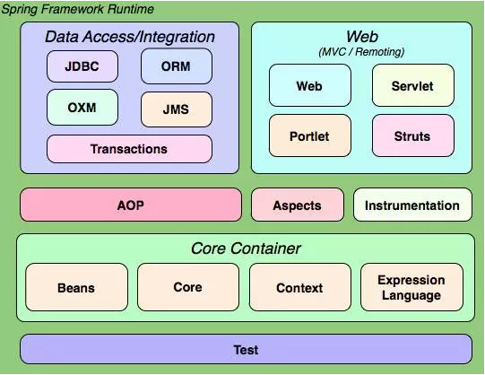
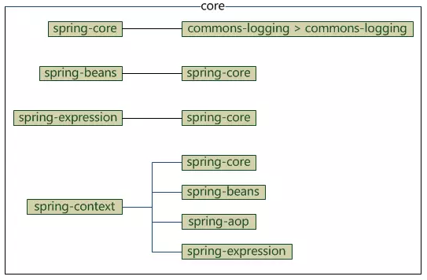
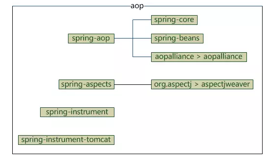
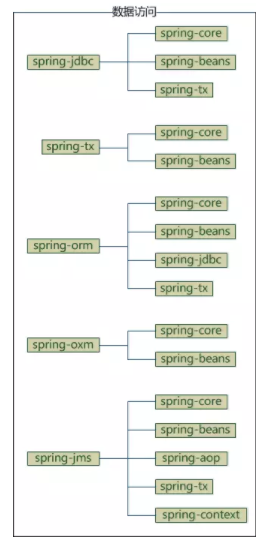
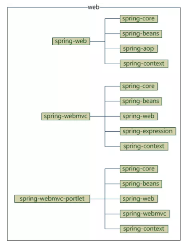
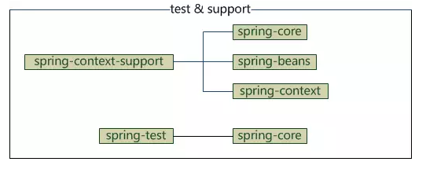
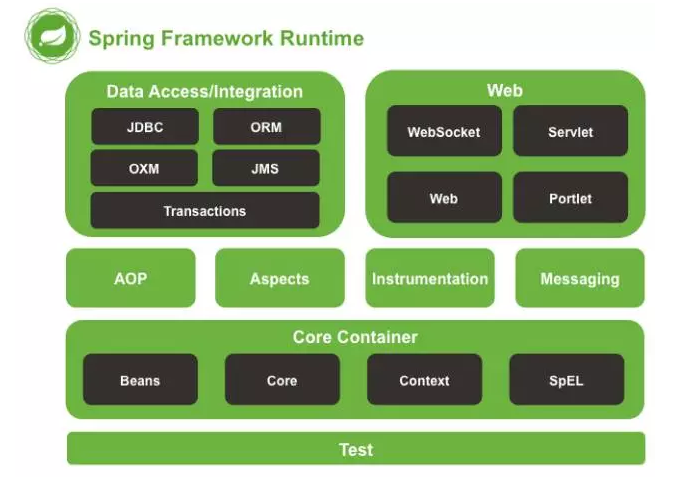
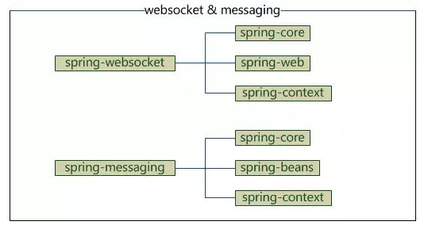

很多人都在用spring开发java项目，但是配置maven依赖的时候并不能明确要配置哪些spring的jar，经常是胡乱添加一堆，编译或运行报错就继续配置jar依赖，导致spring依赖混乱，甚至下一次创建相同类型的工程时也不知道要配置哪些spring的依赖，只有拷贝.....
spring的jar包只有20个左右，每个都有相应的功能，一个jar还可能依赖了若干其他jar，所以，搞清楚它们之间的关系，配置maven依赖就可以简洁明了，下面举个例子，要在普通java工程使用spring框架，需要哪些jar呢？只要一个
<dependency>
<groupId>org.springframework</groupId>
<artifactId>spring-context</artifactId>
<version>3.2.17.RELEASE</version>
</dependency>
那要在web工程中引入spring mvc呢？也只要配置一个依赖
<dependency>
<groupId>org.springframework</groupId>
<artifactId>spring-webmvc</artifactId>
<version>3.2.17.RELEASE</version>
</dependency>
为什么可以这样配置？接下来我们以spring 3.2.17.RELEASE版本为例，介绍spring框架结构，spring 4稍有不同，将在最后介绍
spring官网给出了一张spring3的结构图

图中将spring分为5个部分：core、aop、data access、web、test，图中每个圆角矩形都对应一个jar，如果在maven中配置，所有这些jar的“groupId”都是“org.springframework”，每个jar有一个不同的“artifactId”，另外，“instrumentation”有两个jar，还有一个“spring-context-support”图中没有列出，所以spring3的jar包一共是19个
下面介绍这5个部分的jar以及依赖关系
core
core部分包含4个模块
spring-core：依赖注入IoC与DI的最基本实现
spring-beans：Bean工厂与bean的装配
spring-context：spring的context上下文即IoC容器
spring-expression：spring表达式语言
它们的完整依赖关系

因为spring-core依赖了commons-logging，而其他模块都依赖了spring-core，所以整个spring框架都依赖了commons-logging，如果有自己的日志实现如log4j，可以排除对commons-logging的依赖，没有日志实现而排除了commons-logging依赖，编译报错
<dependency>
<groupId>org.springframework</groupId>
<artifactId>spring-context</artifactId>
<version>3.2.17.RELEASE</version>
<exclusions>
<exclusion>
<groupId>commons-logging</groupId>
<artifactId>commons-logging</artifactId>
</exclusion>
</exclusions>
</dependency>
aop
aop部分包含4个模块
spring-aop：面向切面编程
spring-aspects：集成AspectJ
spring-instrument：提供一些类级的工具支持和ClassLoader级的实现，用于服务器
spring-instrument-tomcat：针对tomcat的instrument实现
它们的依赖关系

data access
data access部分包含5个模块
spring-jdbc：jdbc的支持
spring-tx：事务控制
spring-orm：对象关系映射，集成orm框架
spring-oxm：对象xml映射
spring-jms：java消息服务
它们的依赖关系

web
web部分包含4个模块
spring-web：基础web功能，如文件上传
spring-webmvc：mvc实现
spring-webmvc-portlet：基于portlet的mvc实现
spring-struts：与struts的集成，不推荐，spring4不再提供
它们的依赖关系

test
test部分只有一个模块，我将spring-context-support也放在这吧
spring-test：spring测试，提供junit与mock测试功能
spring-context-support：spring额外支持包，比如邮件服务、视图解析等
它们的依赖关系

到这里，spring3的介绍就完了，看着这些图我相信你在maven中配置spring依赖时不会再混乱了
下面介绍spring4，与spring3结构基本相同，下面是官网给出的结构图

可以看到，图中去掉了spring3的struts，添加了messaging和websocket，其他模块保持不变，因此，spring4的jar有20个
spring-websocket：为web应用提供的高效通信工具
spring-messaging：用于构建基于消息的应用程序
它们的依赖关系
